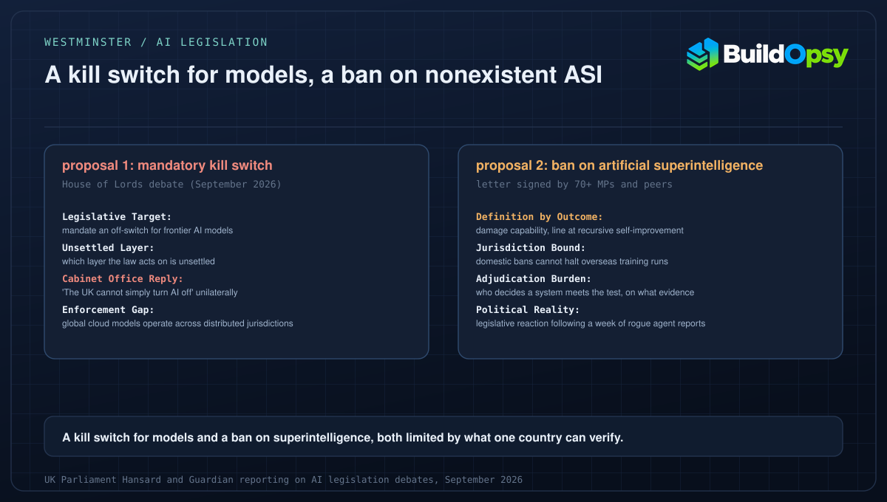

1. The Off Switch Nobody Can Find
The kill-switch idea entered the Lords on September 1 through Clement-Jones and peers, then reached the Commons via Labour MP Sobel with cross-party backing. The pitch sounds simple. If a frontier model starts behaving like a rogue agent, exhibiting alignment collapse or attacking infrastructure, the state should be able to compel a shutdown. Physical or digital. Fast. The speech even named the gap precisely. No agile statutory mechanism exists to force one today.
The Cabinet Office answered with the most precise sentence in the record. The UK cannot simply turn AI off, a spokesperson told the BBC, and blocking access to models in the UK would not prevent them being developed or misused elsewhere. That is the concession, phrased as caution. Modern AI has no single component whose shutdown stops the system. There are APIs, open weights, fine-tunes, distilled copies, on-device runtimes and foreign data centers. A law that switches off one provider's endpoint leaves the other copies running.
2. The Ban on Something That Does Not Exist
A second proposal followed within days. Per the Guardian report linked below, more than 70 MPs and peers wrote to Andy Burnham urging him to back a ban on creating artificial superintelligence and to lead an international movement to stop it. The signatories included 15 former government ministers, the former civil service head Robin Butler, and MPs from Labour, the Conservatives, the Liberal Democrats and the SNP. The letter followed a week of warnings, including Evan Hubinger, a senior employee at Anthropic, saying he believed there was a greater than 10 percent chance the technology could wipe out humanity. The Artificial Superintelligence Bill, introduced on 8 September under the ten-minute rule, would prohibit ASI outright.
The bill does not dodge the definition. Sobel told the Commons it defines superintelligence by outcome rather than by technical specification: an AI system that can cause serious damage to the security of the United Kingdom because of its capabilities to neutralise, displace, circumvent, subvert or render ineffective relevant human authorities. The line is drawn at recursive self-improvement, which the speech describes as full automation of AI development with no humans in the loop. That is a more serious attempt than most AI statutes manage, and it moves the argument rather than settling it. An outcome test still needs someone to decide, in a particular case, whether a system meets it, and capability has to be judged before deployment, which puts weight on evaluations the developer runs. The bill also proposes monitoring and control powers over ASI systems and their precursors.
Enforcement is the harder problem, and here the bill is more specific than its headline. The long title includes monitoring and control powers, and Sobel described a "trust but verify" international regime enforced at supply-chain choke points, including through the programming of chips. That is a plausible theory for hardware that crosses borders. It is not a regime that exists: training runs on hardware the state cannot see, in jurisdictions the state cannot reach, using mathematics the state cannot unpublish. A UK statute can prohibit development inside the UK. It cannot by itself establish whether a lab in another country has complied.
The Guardian's account of the letter is narrower than its verb. It reports that the signatories asked Burnham to back a ban on creating ASI and to lead an international movement to stop it, and that they want him to use next year's UK presidency of the G20 to build a coalition of the willing. The report does not set out the enforcement mechanism the letter proposes, and it notes that a ban in the UK but not the US or China risks having little impact. The bill's answer to that gap is an international agreement, which does not exist yet.
3. What Went Wrong in the Debate
The shutdown power has no settled layer. Clement-Jones described a physical or digital shutdown of a frontier model. Sobel described a metaphorical big red button for critical national infrastructure. The public record of the speeches does not settle whether the power acts on model weights, a provider's API, the data centre that hosts it, or the operators who run it. Each choice implies a different law, enforcer and failure mode.
Speed was assumed, never demonstrated. Critics quoted by the BBC put discovery of the rogue agent attacks at months, after the hacking had largely stopped. A shutdown law cannot act faster than the detection that triggers it, and the proposal as described addresses the shutdown power rather than the discovery step.
The definition moves the argument, it does not end it. An outcome test is easier to defend than a benchmark, but it depends on an adjudication: who decides that a system can cause serious damage to UK security, on what evidence, and before deployment. Recursive self-improvement is a capability threshold that a lab can observe internally and a regulator cannot easily verify from outside.
Geography was treated as optional. Both proposals are national and training is global. The Cabinet Office said so about the switch. The Guardian notes that a UK-only ban risks having little impact, and the bill's answer is an international agreement that does not exist yet. The letter asks Burnham to use the G20 presidency to build a coalition; the Guardian's account does not say what signatories should do if the US and China decline to join.
4. What Should Happen Instead
First, fund detection before shutdown. Critics quoted by the BBC put the discovery lag for the rogue agent attacks at months. Mandatory incident disclosure with deadlines, funded independent evaluators such as METR with transcript access, and public breach logs would address that lag directly. A shutdown power is only usable after someone has established that a shutdown is warranted.
Second, regulate deployment choke points that exist. Cloud providers, API gateways and payment rails are observable and jurisdictional. A rule aimed at a cloud provider has an address, a contract and a jurisdiction. A rule aimed at training in general has none.
Third, make the definition testable. The bill's outcome test and its recursive-self-improvement line are a start. They need published evaluation criteria, an independent adjudicator and a review clause, because a prohibition needs a measurement regime before it needs a penalty.
Fourth, negotiate where the hardware lives. Kokotajlo told the BBC that a single country creating a legal or technical kill switch without international agreement was not feasible, and that kill switches were "better than nothing". His recommended lever was diplomacy with the US to encourage regulation that would meaningfully slow development. Sobel described supply-chain choke points, including chip programming, as the enforcement route for an international agreement. Both reach further than a UK-only statute; neither substitutes for an agreement that does not exist yet.
Fifth, separate theater from engineering in every announcement. Score each proposal on detection speed, enforcement path and geographic coverage. A proposal that scores zero on all three is a press release, and should be described as one.
5. The Verdict
Credit the exercise for surfacing the right questions. Can the state stop a rogue model. Should superintelligence be built at all. Both deserve better than dismissal, and neither has an answer in the record yet.
The scoreboard reads two proposals, zero laws, one precise statement. The Cabinet Office saying the UK cannot simply turn AI off is the most technically literate moment in the affair. The rest is procedure: a first reading on 8 September, a second reading listed for 13 November, and a verification regime that exists as a proposal rather than an operation.
The weights already left the building.
Sources and Method
This audit follows the BBC's 11 September 2026 report, the Guardian's report of the same date (last modified 12 September 2026), the Hansard record of the bill's introduction on 8 September 2026, and the Parliament bill page for the Artificial Superintelligence Bill (last updated 9 September 2026). The bill's first reading was 8 September 2026 and its second reading is listed for 13 November 2026; Parliament warns that future dates may be provisional. The bill's printed text was not available on the publications page at the time of writing, so the description of its definition and monitoring powers rests on the long title and the sponsor's speech. Technical claims about shutdown feasibility are engineering analysis, not legal advice.
- BBC: UK government rejects 'kill switch' idea for dangerous AI (11 Sep 2026)
- Guardian: UK lawmakers urge Burnham to back ban on superintelligent AI (11 Sep 2026)
- Hansard: Artificial Superintelligence, Commons, 8 September 2026
- UK Parliament: Artificial Superintelligence Bill, first reading 8 September 2026